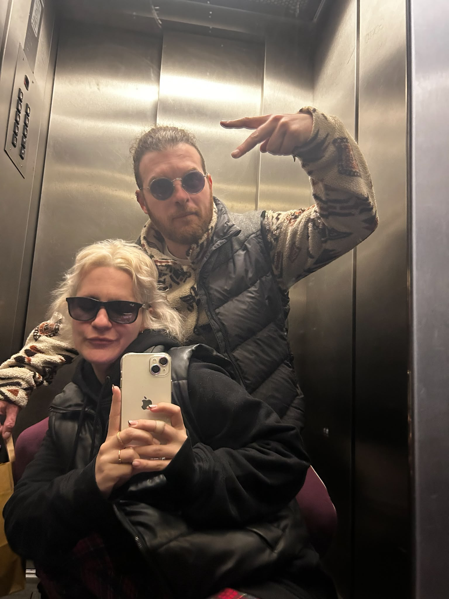

Arribada
Recepció i acomodament dels convidats. Hi haurà refrigeris a la vostre disposició.
Ens casem!
28 i 29 de maig de 2027
Ens fa molta il·lusió compartir aquest dia tan especial amb vosaltres. En aquesta pàgina web trobareu tota la informació necessària sobre l'esdeveniment així com un parell de formularis que caldria emplenar individualment.
Si teniu qualsevol dubte, només cal que ens obriu i ho resolem!

divendres 28
El divendres es durà a terme la cerimònia amb la família i els amics més propers. L'hora d'arribada serà a primera hora de la tarda, després de dinar, així tothom es podrà acomodar amb tranquil·litat.
Recepció i acomodament dels convidats. Hi haurà refrigeris a la vostre disposició.
Moment oficial, bonic i amb alta probabilitat de llagrimeta. Porteu mocadors.
Una estoneta per assimilar la cerimònia i retocar-se el maquillatge. Amb menjar!
Àpat principal a l'exterior. Moment per a agafar forces pel que queda de nit.
Música, bailoteos i barra lliure fins que el cos aguanti l'hora que permet l'ajuntament.
Desplaça horitzontalment per veure tot el planning
dissabte 29
El dissabte continuarà la celebració, on hi haurà noves incorporacions! Durant el matí podrem fer una mica de piscineo i vermuteo, no us oblideu el banyador; i després farem un bon dinar de germanor.
Per la tarda hem preparat un mini-festival per a tothom! Hi haurà micro obert pels més valents, concerts en directe i diversos DJ's famosíssims per a acabar la vetllada.
Una estona de relax, remull i sol per a curar la ressaca (la emocional, clar).
Taula llarga, gana acumulada i converses de sobretaula amb un bon cafè.
Tarda de música en directe per a tots els gustos i colors. Good vibes only!
Pit stop estratègic abans d'entrar de ple al tram final de la jornada.
Música, ballaruques i passos prohibidos fins ben entrada la nit.
Desplaça horitzontalment per veure tot el planning
Detalls pràctics
L'esdeveniment tindrà lloc a la Casa de Colònies Can Maiol (Sant Andreu Salou, Girona).
La casa es troba a uns 20 minuts de Girona, és de fàcil accés i compta amb un aparcament bastant gros.
Ens podrem quedar a dormir a la casa, ja que aquesta disposa de diverses habitacions amb lliteres i hi ha forces places disponibles.
Ara bé, aquestes places són limitades, per tant qui es vulgui quedar haurà de indicar al formulari per tal de gestionar-ho com toca.
Els que tingueu furgoneta aviseu-nos, així també ho podem gestionar per si la voleu portar i dormir-hi.
Per als nuvis el millor regal que ens podeu fer és compartir el dia amb nosaltres, per tant no volem un regal monetari com a tal, si no que ens ajudeu a fer-ho possible.
Per aquest motiu, tothom qui vingui el dissabte 29 haurà de pagar prèviament varies coses:
El dissabte hi haurà servei de barra per a les consumicions, per tant recomanem portar efectiu!
Formulari
Deixem per aquí un parell de formularis que caldria emplenar individualment. N'hi ha un per cada dia!
Lo típic: al·lèrgies i/o intoleràncies i a què us apunteu. És important omplenar el formulari tant si podeu assistir com si no. Gràcies!